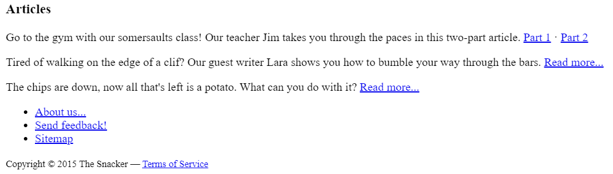

Introduction
The <footer> tag is used to define a footer or end block. A common footer is the footer block at the bottom of a web page that contains information such as author, copyright, and contact information.
Example
<footer>
<p>Author: 簡宏宇</p>
<p><a href="409850400@gms.tku.edu.tw">409850400@gms.tku.edu.tw</a></p>
</footer>
Element
- authorship information
- copyright information
- contact information
- sitemap
- back to top links
- related documents
Application
EX I. A page with two footers
<body>
<footer><a href="../">Back to index...</a></footer>
<hgroup>
<h1>Example code</h1>
<h2>use of two footers</h2>
</hgroup>
<p>This code show the page with two footers.</p>
<footer><a href="../">Back to index...</a></footer>
</body>
Result

EX II. Fat footer
<footer>
<nav>
<section>
<h1>Articles</h1>
<p>Go to the gym with
our somersaults class! Our teacher Jim takes you through the paces
in this two-part article. <a href="articles/somersaults/1">Part
1</a> · <a href="articles/somersaults/2">Part 2</a>
</p>
<p>Tired of walking on the edge of
a clif ? Our guest writer Lara shows you how to bumble
your way through the bars. <a href="articles/kindplus/1">Read
more...</a>
</p>
<p>The chips are down, now all
that's left is a potato. What can you do with it? <a
href="articles/crisps/1">Read more...</a>
</p>
</section>
<ul>
<li> <a href="/about">About us...</a>
<li> <a href="/feedback">Send feedback!</a>
<li> <a href="/sitemap">Sitemap</a>
</ul>
</nav>
<p><small>Copyright © 2015 The Snacker —
<a href="/tos">Terms of Service</a></small>
</p>
</footer>
Result
